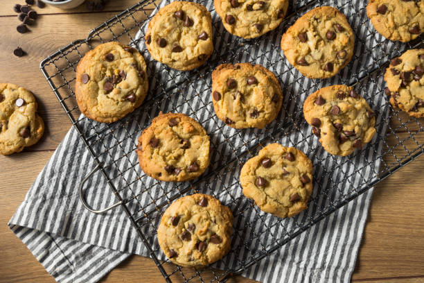

Chocolate Chip Cookies

Description
Soft and chewy chocolate chip cookies.
Ingredients
- 280g self-raising flour
- 1 teaspoon baking soda
- 1/2 teaspoon salt
- 170g unsalted butter
- 150g light or dark brown sugar
- 100g granulated sugar
- 1 large egg
- 2 teaspoons vanilla extract
- 225g chocolate chips or chocolate chunks
Steps
- In a large bowl, whisk flour, baking soda and salt together.
- In a medium bowl, whisk melted butter, brown sugar and granulated sugar together, until no lumps remain.
- Whisk in the egg in the medium bowl.
- Pour the wet ingredients into wet ingredients and mix together. Then fold in the chocolate chips or chocolate chunks.
- Cover the dough tightly and place in the fridge for at least 2-3 hours or overnight to chill.
- Take a dough out and allow it to soften slightly for 10 minutes.
- Meanwhile preheat the oven to 165°C
- Using a cookie scoop or tablespoon, scoop out dough and roll into balls, then place on the parchment paper.
- Bake cookies for 12-13 minutes.